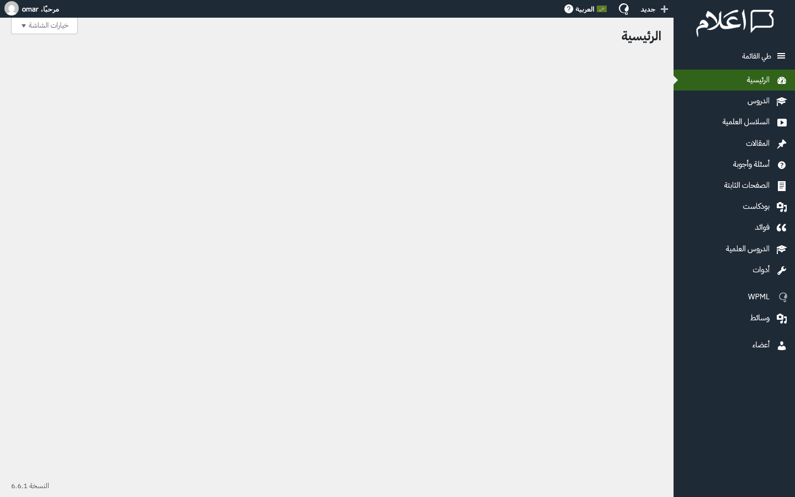
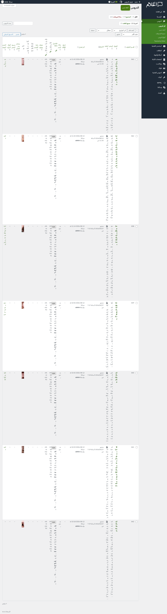
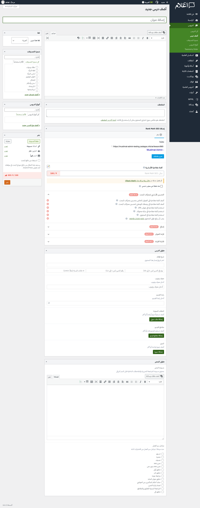
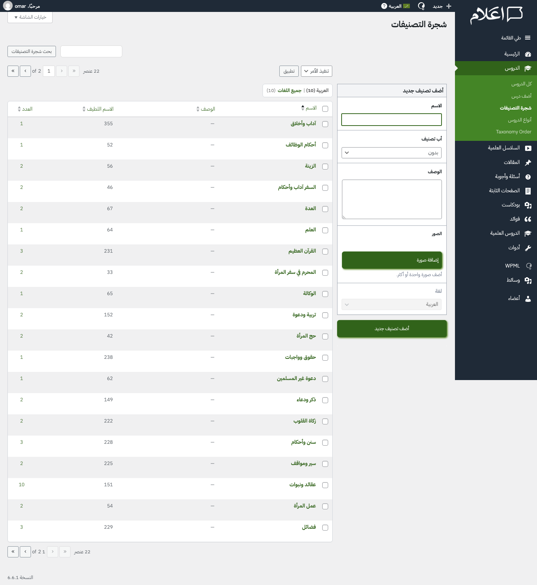
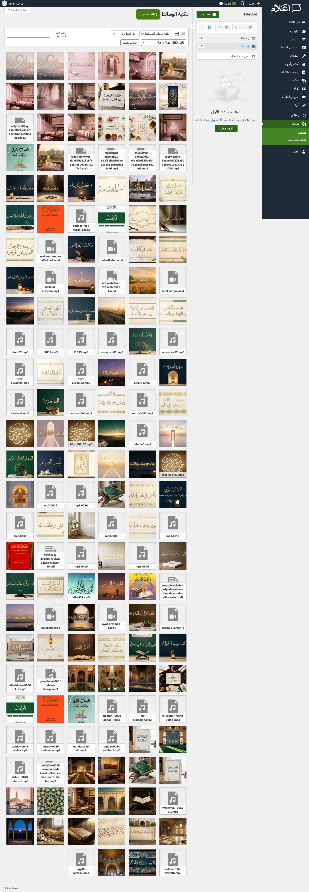
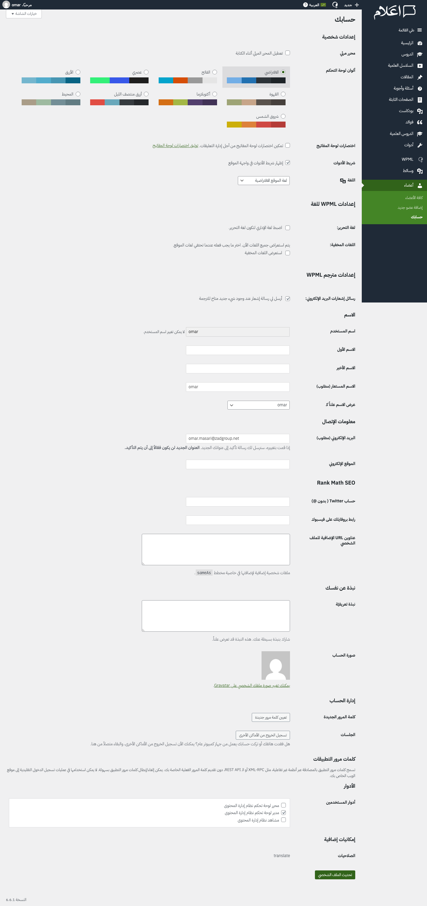

كل قسم يعرض لقطة شاشة حقيقية من الوضع الحالي ثم الشكل المستهدف بعد التحسين مع التغييرات المطلوبة وسبب كل تغيير. أيقونات الشريط الجانبي تبقى كما هي — التغييرات تشمل الألوان والتسميات والعناصر المخفية فقط.
/* Sidebar — softer background */
#adminmenuback, #adminmenuwrap, #adminmenu {
background: #1e293b !important;
}
#adminmenu .wp-has-current-submenu > a,
#adminmenu li.current a.menu-top {
background: #16a34a !important;
color: #fff !important;
}
#adminmenu .wp-submenu { background: #0f172a !important; }
#adminmenu li.menu-top:hover { background: #334155 !important; }
/* Dashboard card grid */
.aalaam-dash-grid {
display: grid;
grid-template-columns: repeat(5, 1fr);
gap: 12px; padding: 16px 0;
}
.aalaam-dash-card {
background: #fff; border: 1px solid #e2e8f0;
border-radius: 8px; padding: 20px 12px;
text-align: center; color: #334155; transition: 0.15s;
}
.aalaam-dash-card:hover {
border-color: #16a34a;
box-shadow: 0 2px 8px rgba(22,163,74,0.1);
}
/* Hide Tools menu + Taxonomy Order submenus */
#adminmenu #menu-tools { display: none !important; }
#adminmenu a[href*="page=to-interface-"] { display: none !important; }
/* Rename WPML visually */
#adminmenu a[href*="page=tm/menu/main.php"] .wp-menu-name {
font-size: 0 !important;
}
#adminmenu a[href*="page=tm/menu/main.php"] .wp-menu-name::after {
content: "الترجمة" !important;
font-size: 14px !important;
}

PHP: add_action('welcome_panel',...) الصفحة الرئيسية حالياً فارغة تماماً. المستخدم يدخل ولا يعرف من أين يبدأ. البطاقات تعطيه نظرة عامة فورية على كل ما يمكنه فعله — مثل صفحة رئيسية لتطبيق هاتف. هذا يُطبّق مبدأ Progressive Disclosure: ابدأ بالمفيد.add_filter('login_redirect',...) أول ما يراه المستخدم بعد الدخول هو صفحة بيضاء — أسوأ انطباع أول ممكن. التوجيه لقائمة المحتوى يُعطيه سياقاً فورياً.CSS: #adminmenuback { background:#1e293b } التوجه البصري الجديد يستخدم ألوان هادئة ومريحة. أيقونات القائمة تبقى كما هي — التغيير في الألوان فقط. يمكن تعديل اللون ليتماشى مع هوية الموقع.PHP: $menu[0] = 'الترجمة' المستخدم يبحث عن وظيفة ("أريد ترجمة محتوى") لا عن اسم منتج تقني. سمّ الأشياء بما تفعله./* Hide extra columns */
.column-content, th.column-content { display: none !important; }
.column-rank_math_seo_details, th.column-rank_math_seo_details { display: none !important; }
.column-slug, th.column-slug { display: none !important; }
td.column-icl_translations, th.column-icl_translations { display: none !important; }
/* Bigger thumbnails */
.wp-list-table .column-thumbnail img,
.wp-list-table td img.wp-post-image {
width: 60px !important; height: 60px !important;
object-fit: cover !important; border-radius: 6px !important;
}
/* Better row spacing + hover */
.wp-list-table td, .wp-list-table th { padding: 12px 10px !important; }
.wp-list-table tbody tr:hover { background: #f1f5f9 !important; }
.wp-list-table thead th {
background: #f8fafc !important;
border-bottom: 2px solid #e2e8f0 !important;
color: #475569 !important; font-weight: 600 !important;
}
/* Hide top bulk actions */
.tablenav.top .bulkactions { display: none !important; }

/* Hide permalink/slug */
#edit-slug-box, #slugdiv, .edit-slug { display: none !important; }
/* Hide author metabox */
#authordiv { display: none !important; }
/* Rank Math SEO — collapsed state */
#rank_math_metabox.closed .inside { display: none; }
.rank-math-tooltip, .rank-math-status,
.rank-math-score { display: none !important; }
/* Title field — larger, cleaner */
#title, #titlewrap input {
font-size: 22px !important; padding: 12px 16px !important;
border: 2px solid #e2e8f0 !important; border-radius: 8px !important;
}
#title:focus {
border-color: #16a34a !important;
box-shadow: 0 0 0 3px rgba(22,163,74,0.12) !important;
}
/* Publish button — prominent */
#publish, #submitdiv .button-primary {
background: #16a34a !important; border-color: #15803d !important;
border-radius: 6px !important; padding: 8px 24px !important;
font-size: 14px !important;
}
/* Better metabox styling */
.postbox {
border: 1px solid #e2e8f0 !important;
border-radius: 8px !important;
box-shadow: 0 1px 3px rgba(0,0,0,0.04) !important;
}

JS: document.querySelector('#rank_math_metabox').classList.add('closed') SEO مهم — بعض المستخدمين يحتاجونه. لكن عرضه مفتوحاً بنتيجة "9/100" بلون أحمر يُخيف من لا يعرفه. الحل: اطوِه افتراضياً — من يحتاجه ينقر لفتحه، ومن لا يحتاجه لا يراه./* Hide slug field in taxonomy forms */
.term-slug-wrap, .form-field.term-slug-wrap {
display: none !important;
}
/* Smaller description field */
.term-description-wrap textarea { height: 60px !important; }
/* Hide language filter */
.icl_subsubsub, .tablenav .icl_subsubsub {
display: none !important;
}
/* Better form styling */
.form-field input[type="text"] {
border: 2px solid #e2e8f0 !important;
border-radius: 6px !important;
padding: 8px 12px !important;
}
.form-field input[type="text"]:focus {
border-color: #16a34a !important;
box-shadow: 0 0 0 3px rgba(22,163,74,0.12) !important;
}
/* Add taxonomy button */
#submit, .form-wrap .button {
background: #16a34a !important; border-color: #15803d !important;
border-radius: 6px !important; color: #fff !important;
padding: 8px 20px !important;
}

/* Hide WPML language filter in media library */
.media-toolbar .wpml-media-lang-selector,
.media-toolbar-secondary .wpml-media-lang-selector,
select.wpml-media-lang-filter {
display: none !important;
}

/* Hide Rank Math SEO section */
.rank-math-person-social, .rank-math-user-wrap,
[class*="rank-math"] { display: none !important; }
/* Hide WPML language settings */
.wpml-section, tr.wpml-language-select { display: none !important; }
/* Hide visual editor disable option */
.user-rich-editing-wrap { display: none !important; }
/* Hide keyboard shortcuts option */
.user-comment-shortcuts-wrap { display: none !important; }
/* Hide toolbar option */
.user-admin-bar-front-wrap, .show-admin-bar {
display: none !important;
}

/* Better Arabic text rendering */
body.rtl, body.rtl #wpcontent, body.rtl #wpbody-content {
font-family: "IBM Plex Sans Arabic", "Noto Sans Arabic",
"Segoe UI", Tahoma, sans-serif;
font-size: 14px; line-height: 1.8;
}
/* Hide WP version number */
#footer-upgrade, #footer-thankyou { display: none !important; }
/* Hide Screen Options + Help */
#screen-options-link-wrap, #contextual-help-link-wrap,
#screen-meta-links { display: none !important; }
/* Hide admin bar language switcher */
#wpadminbar #wp-admin-bar-WPML_ALS { display: none !important; }
/* All primary buttons — green */
.button-primary, .wp-core-ui .button-primary {
background: #16a34a !important; border-color: #15803d !important;
border-radius: 6px !important; text-shadow: none !important;
}
/* Input fields — green focus ring */
input[type="text"]:focus, textarea:focus, select:focus {
border-color: #16a34a !important;
box-shadow: 0 0 0 3px rgba(22,163,74,0.12) !important;
outline: none !important;
}
كل عنصر يتكرر عبر صفحات متعددة. الهدف: تطبيق التغيير مرة واحدة عالمياً. العمود الأول يوضح شكل العنصر كما يظهر حالياً في لوحة التحكم.
| شكل العنصر | العنصر | الإجراء | الصفحات المتأثرة | التنفيذ | السبب |
|---|---|---|---|---|---|
9/100Rank Math SEO ⚠ الكلمة المفتاحية غير موجودة |
Rank Math SEO metabox | طي | كل صفحات التحرير ×٧ |
JS: #rank_math_metabox.classList.add('closed') يبقى قابلاً للتوسيع |
نتيجة حمراء تُخيف — اطوِه لمن لا يحتاجه. من يحتاج SEO يفتحه بنقرة |
الرابط الدائم: …/lesson/٢٠٢٥٠٨١٣ تعديل |
permalink / slug | إخفاء | كل صفحات التحرير ×٧ |
PHP: remove_meta_box('slugdiv') CSS: #edit-slug-box { display:none } |
تعديله بالخطأ يكسر الروابط — WP يُنشئه تلقائياً |
المؤلف: Muslimat Admin تصفح |
حقل المؤلف | إخفاء | كل صفحات التحرير ×٧ |
PHP: remove_meta_box('authordiv') | اسم حساب تقني مع زر "تصفح" يسمح بتغيير المؤلف بالخطأ |
| عمود المحتوى/المقتطف | إخفاء | كل جداول المحتوى ×٧ |
PHP: unset($columns['content']) CSS: .column-content { display:none } |
مقتطف مبتور — المستخدم يفتح المنشور للقراءة | |
🇸🇦🇬🇧+ |
أعمدة أعلام اللغات (WPML) | إخفاء | كل جداول المحتوى ×٧ |
PHP: unset where key contains 'icl_translations' CSS: .column-icl_translations { display:none } |
إدارة الترجمة لها قسمها الخاص |
N/A |
عمود SEO في الجدول | إخفاء | كل جداول المحتوى ×٧ |
CSS: .column-rank_math_seo_details { display:none } | يعرض "N/A" — لا قيمة في الجدول. SEO يُدار من صفحة التحرير |
| Bulk Actions العلوية | إخفاء | كل جداول المحتوى ×٧ |
CSS: .tablenav.top .bulkactions { display:none } | ميزة متقدمة — الإبقاء على نسخة الأسفل كافٍ | |
٣٢px |
الصور المصغرة في الجداول | تنسيق | كل جداول المحتوى ×٧ |
CSS: td img { width:60px; height:60px; border-radius:6px } | ٣٢px صغيرة جداً للتعرف على المحتوى |
الاسم اللطيف: اسم-التصنيف |
حقل Slug في التصنيفات | إخفاء | شجرة التصنيفات ×٧أنواعمصادرفهارس |
CSS: .term-slug-wrap { display:none } | WP يُنشئه تلقائياً — عرضه يُغري بالتعديل الخاطئ |
العربية (١٠)| الإنجليزية (٠) |
فلتر اللغة (WPML) | إخفاء | كل التصنيفاتالوسائط |
CSS: .icl_subsubsub { display:none } CSS: select.wpml-media-lang-filter { display:none } |
المحتوى يُدار بالعربية — فلتر اللغات ضوضاء بصرية |
▼ خيارات الشاشة |
خيارات الشاشة | إخفاء | كل الصفحات |
CSS: #screen-meta-links { display:none } | نتحكم بالأعمدة مسبقاً — لا نريد إعادة تفعيل ما أخفيناه |
🇸🇦العربية ▼ |
مُبدّل اللغة (شريط علوي) | إخفاء | كل الصفحات |
CSS: #wp-admin-bar-WPML_ALS { display:none } | ضغطه بالخطأ يُحوّل الواجهة للإنجليزية |
النسخة 6.6.1 |
رقم إصدار WordPress | إخفاء | كل الصفحات |
CSS: #footer-upgrade { display:none } | معلومة تقنية + كشف أمني للإصدار |
Taxonomy Order › |
Taxonomy Order (قائمة فرعية) | إخفاء | قائمة فرعية ×٧ |
PHP: remove_submenu_page() CSS: a[href*="to-interface-"] { display:none } |
صفحة إنجليزية مع إعلانات ترويجية |
🔧أدوات |
قائمة "أدوات" | إخفاء | الشريط الجانبي |
PHP: remove_menu_page('tools.php') | صفحة فارغة — عنصر قائمة بدون محتوى |
🌐WPML |
"WPML" في القائمة | تسمية | الشريط الجانبي |
PHP: $menu item[0] = 'الترجمة' | سمّ الأشياء بما تفعله ("الترجمة") لا بما هي ("WPML") |
حساب Twitter/X: @username |
حقول SEO بالملف الشخصي | إخفاء | حسابك |
CSS: [class*="rank-math"] { display:none } | حقول تقنية لعرض بيانات في محركات البحث — لا تخص المستخدم |
مدير لوحة تحكم نظام إدارة المحتوى |
اسم الدور | تسمية | الأعضاء |
PHP: $wp_roles->roles[$slug]['name'] = 'مدير المحتوى' | ٧ كلمات كثيرة — "مدير المحتوى" أوضح وأقصر |
صفحة فارغة ∅ |
الصفحة الرئيسية (Dashboard) | إضافة | الرئيسية |
PHP: add_action('welcome_panel', ...) شبكة بطاقات روابط لكل نوع محتوى |
الصفحة الرئيسية فارغة — بطاقات سريعة تعطي المستخدم نقطة بداية |
Aa 13px / 1.4 |
الخط العربي + ارتفاع الأسطر | تنسيق | كل الصفحات |
CSS: body.rtl { font-family:"IBM Plex Sans Arabic"; font-size:14px; line-height:1.8 } | WP مصمم للاتينية — العربية تحتاج ارتفاع أسطر أكبر للوضوح |
نشرحفظ |
ألوان الأزرار وحقول الإدخال | تنسيق | كل الصفحات |
CSS: .button-primary { background:#16a34a; border-radius:6px } CSS: input:focus { border-color:#16a34a } |
اتساق بصري مع اللون الأساسي — يمكن تعديله حسب هوية الموقع |
١٦ أغسطس ٢٠٢٦ · منصة أعلام
لوحة التحكم الحالية تستخدم ثيم WordPress الافتراضي (رمادي داكن + أخضر غامق) — مصمم للمطورين يقضون ساعات في لوحات التحكم. مستخدمو منصة أعلام مختلفون: يدخلون اللوحة لنشر محتوى ثم يخرجون.
التوجه الجديد يستخدم ألوان هادئة (أخضر #16a34a مع رمادي-أزرق) مع تباعد أوسع وخط عربي أوضح (IBM Plex Sans Arabic) ليشعر المستخدم أنه في بيئة مألوفة ومريحة — ليس في لوحة تحكم تقنية. يمكن تعديل الألوان لتتماشى مع هوية الموقع.
لوحة تحكم أعلام مبنية على WordPress مع أنواع محتوى مخصصة (دروس، سلاسل علمية، مقالات، أسئلة وأجوبة، صفحات ثابتة، بودكاست، فوائد، دروس علمية). المستخدمون المستهدفون هم مديرو المحتوى — وكثير منهم لم يستخدموا WordPress سابقاً وليس لديهم خلفية تقنية.
القيود التقنية: لا يمكن إجراء تغييرات هيكلية على HTML. لكن يمكن: تعديلات CSS، إخفاء عناصر، إعادة تسمية، إعادة ترتيب، وتعديلات PHP بسيطة.
ملاحظة: أيقونات الشريط الجانبي تبقى كما هي — التغييرات تشمل الألوان والتسميات والعناصر المخفية فقط.
| الأولوية | العدد | الوصف |
|---|---|---|
| حرجة | ٧ | عناصر تُربك المستخدم أو تمنعه من إتمام مهامه |
| متوسطة | ٩ | عناصر تزيد العبء المعرفي دون ضرورة |
| تحسينية | ٦ | فرص لتحسين الراحة البصرية |
القائمة تحتوي على ١٢ عنصراً رئيسياً مع قوائم فرعية متعددة، مما يُنتج أكثر من ٤٨ رابطاً.
الصفحة الرئيسية فارغة تماماً — لا تعرض أي محتوى أو إحصائيات أو روابط سريعة.
جداول WordPress الافتراضية مع أعمدة كثيرة (عنوان، محتوى، تصنيف، تاريخ، مؤلف، لغات، SEO).
| # | الإجراء | النوع | السبب |
|---|---|---|---|
| ١ | بطاقات روابط سريعة للرئيسية | PHP | الرئيسية فارغة — بطاقات تعطي نقطة بداية |
| ٢ | طي Rank Math SEO افتراضياً | JS | SEO مهم لكن النتيجة الحمراء تُخيف — اطوِه |
| ٣ | إخفاء Taxonomy Order | PHP | صفحة إنجليزية مع إعلانات |
| ٤ | إخفاء permalink/slug | PHP+CSS | تعديله يكسر الروابط |
| ٥ | إخفاء أعمدة زائدة | PHP+CSS | تقليل كثافة المعلومات |
| ٦ | توجيه الدخول لصفحة الدروس | PHP | الرئيسية فارغة |
| ٧ | إخفاء صفحات بدون صلاحيات | PHP | رسائل "ليس لديك إذن" |
| ٨ | تغيير WPML → الترجمة | PHP | سمّ بالوظيفة لا بالاسم |
| ٩ | توحيد الألوان والخط | CSS | لون موحد + راحة عربية |
| المُسلّم | الوصف |
|---|---|
| هذه الصفحة | محاكاة تفاعلية (قبل/بعد) + جدول عناصر + تقرير UX + كود CSS و PHP |
| لقطات الشاشة | ٤٩ لقطة شاشة للوضع الحالي مرفقة في مجلد screenshots |
ملف CSS جاهز للتطبيق — أضفه عبر wp_enqueue_style في admin_enqueue_scripts
أضف في functions.php الخاص بالثيم أو أنشئ إضافة مخصصة